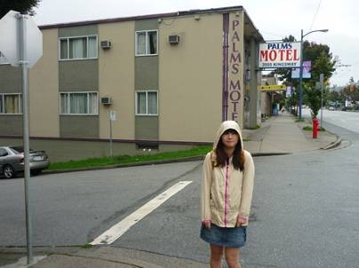
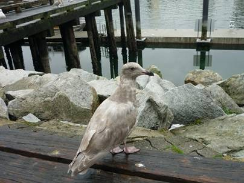
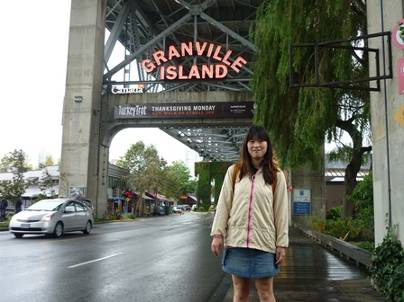
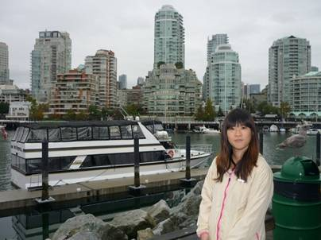
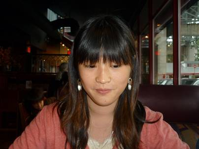
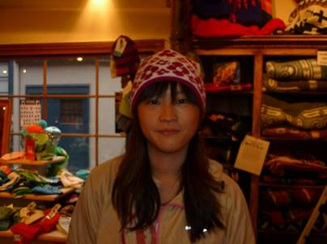
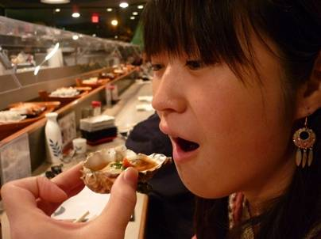
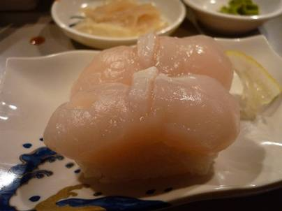
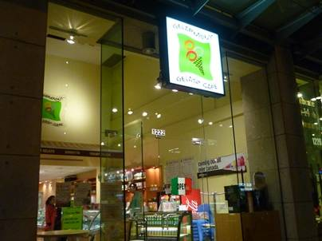
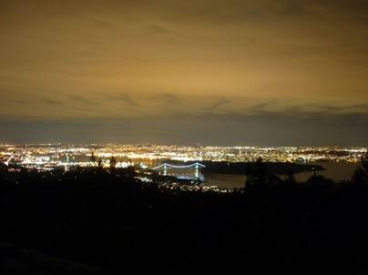

２１日目(9/24)～ショッピング①～

翌日は朝から雨が降っていた。嬉しいことに使い切れないくらいのお金が余ったので朝食は贅沢にもスタバ！



まずは早速ショッピングを楽しむため、グランビルアイランドへ。高層ビル群がそびえるダウンタウンの景色を見ることもできる。


ピアスやニット帽、パーカーを購入♪


この日の夜はなつかしの日本食、すしだ！ダウンタウン、ロブソン通りにあるTSUNAMI寿司というお店はあまり目立たないが名前は知れているのか、多くの人で賑わっていた。日本の回転寿司と違うのは、ネタが小舟に乗って流れてくることだ。マグロ、イカ、ホタテなど新鮮なネタで作られた寿司は日本顔負けのうまさ。特に、生ガキはよく合う酢が和えられていて絶品。ただし、日本の100円ずしのようにリーズナブルではなく、会計の時には二人で6000円程になってしまった･･･。カナダドルを日本円に戻す気は無かったのでいいものの、日本に帰国したらここまで贅沢することはおそらく当分の間ないだろう。

贅沢は終わらない(笑)地球の歩き方に載っていたジェラートのお店で締めくくりのデザート。

バンクーバーの市街からはサイプレス山がよく見える。2010年、バンクーバー五輪の開催地にもなった場所だ。夜になると、山の中腹の明かりがよく目立つ。あそこまで行けば、相当キレイな夜景が見えるのではないかと思い、車を走らせた。ライオンズゲートブリッジを越え、山を登っていくと、数台の車が停まっている展望地があり、そこからはバンクーバーの驚くほど美しい夜景を堪能することができた。他にも数組カップルがいたが、時折日本語が聞こえてくることもあった。ちらりと見ると、どうやらカナダ人と日本人女性のカップルのようである。恐らく、留学中に知り合った彼氏の車で連れてきてもらったに違いない。甘い英語で口説かれていた･･･。